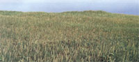
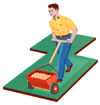
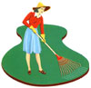

Ecological Lawn Care
By Michael Talbot
May/June 1990
LAWN CARE
There is no substitute for grass as recreational surface for play areas, parklands and ball fields. It is infinitely superior to concrete, and even Astroturf. As a low foreground feature or a distant carpet of green, lawns are a vital aesthetic component of almost any landscape design. They also play a positive environmental role by moderating temperatures and purifying air.
But there is a dark side to this verdant love affair. By 1984, the United States applied more synthetic chemical fertilizers on its lawns than India applied on all its food crops. According to the Environmental Protection Agency, an estimated 65 million pounds of herbicides, insecticides and fungicides were applied around homes and gardens, with another 165 million pounds used on industrial, commercial and government landscapes-much of this on the nation's lawns, a playfields, parks and cemeteries. Other studies indicate that urban and suburban residents are now subjected to more pesticide exposure than their rural counterparts, in spite of the heavy use of pesticides in agricultural areas.
All in all, lawn management by both homeowners and professionals is now a leading cause of environmental contamination. To keep from poisoning our love affair with grass, it may behoove us to practice a different, more healthful kind of lawn care instead.
To most academic or professional turf managers, the idea of ecological, or organic, lawn care is heresy. After all, a synthetic-based turf management program typically includes four or more applications of a strong, high-nitrogen fertilizer and 10 or more doses of various pesticides--a money-intensive regimen. Yet before World War 11, splendid lawns (and gardens) were kept without the heavy synthetic chemical inputs taken as gospel today. Many of the classic lawns and gardens of England, for example, are more than three or four centuries old and still as pure and lush as green velvet.
Happily, more and more people are again growing lovely lawns ecologically. Examples? Since Irwin Brawley turned to organic vegetable-raising techniques, he has maintained the 100 acres of lawns at North Carolina's Davidson College without using any synthetic fertilizers or pesticides-for over 15 years. This includes the school's heavily used athletic fields.
Golfers have to make reservations ahead of time at the popular Sagamore-Hampton Golf Club in southern New Hampshire. There is hardly a more demanding turf than a golf green, yet general manager Peter Luff has maintained all of Sagamore-Hampton's lawn areas organically since the mid-'6os.
After four years of studying turf management at the University of Rhode Island, Michael Merrier started up "a small version of Chemlawn" in 1972. Seven years later, he became convinced that his turf management program was creating serious problems:severe thatch buildup and a need for ever greater inputs just to maintain reasonable health. He switched. Today, Merner maintains over 100 acres of turf organically and guarantees that they will remain free of disease and insect problems.
These professional landscape managers-along with a growing number of other turf growers-prove that ecologically benign lawn care works. Like any organic gardener, each started from the ground up, which is to say, the soil. The basis of a healthy lawn is healthy soil. It is the one great truth of vegetative growth. So, if you are dissatisfied with the way your lawn looks now, start there. If the soil is compacted, infertile or poorly drained, it simply will not grow a healthy lawn without regular infusions of chemicals.
Also, look at the grasses themselves. If your lawn is more than half weeds (and this is unacceptable to you), then you should consider a complete lawn reconstruction. If the lawn grasses are older varieties of bluegrass, ryegrass and fescue or older, warm-season varieties of Bermuda grass, zoysia or saint augustine grass, they may not have the vigor and inherent resistance to pests to thrive without chemical treatments.
For a reconstruction, rent a sod cutter--a machine that literally slices off the existing weeds and inadequate grasses. Afterwards, build up the soil with lots of organic material: leaf mold, compost, peat moss, green manures, etc. Test the soil's pH, and, if necessary, adjust to between 6.5 and 7.0, the range best suited for most grasses.
Then take advantage of the new grass varieties available. They require lower levels of care, provide much greater resistance to pests (and even weeds) and look better, too. With a little extra effort and a few more dollars, you can easily find these improved grasses and introduce them into your lawn.
Again, because nothing does well in poor soil, a complete reconstruction is really the best first step. If you cannot afford the work involved, you're left with having to overseed a poor-soil lawn. Even in this case, however, you will need to do some important prep work to have any chance of success.
First, aerate the soil. This will improve drainage and let oxygen, water and nutrients move through the soil. You could do this by simply walking your lawn with a pitchfork and stabbing it every few inches (always aerate when the soil is moist but not soggy). That opens up drainage channels, but it also compacts their sides and takes much time and effort.
Rental companies usually stock two types of power aerating machines: spikers and corers. A spiker works like the Pitchfork, only it's much faster and easier to use. A corer actually removes cores of compacted soil, which are then raked up and composted. Corers are more effective at aerating a lawn and also provide openings for topdressed fertilizer.
Top-dressing is one of the two best ways to add organic material to a lawn. (Leaving clippings on the lawn is the other.) Don't use coarse compost; it could smother the lawn. instead, broadcast finely shredded compost, composted manure or composted sewage sludge over the site with a rotary or manure spreader. One word of caution: Milorganite, the most popular composted sludge, is a great lawn fertilizer; however, it may contain small amounts of toxic heavy metals. Should any lawn treated with large amounts of Milorganite (or some other heavy-metal contaminated sludge) ever be converted into a vegetable garden, the heavy metals could be taken up into the crops.
Next, get the sod pH to an acceptable level of 6.5 to 7.0. You can test pH with an inexpensive kit available at garden supply centers. If the lawn is quite acid, start boosting it by applying 50 pounds of agricultural limestone per 1,000 square feet. Reapply periodically as needed (preferably in fall). Gypsum, also called land plaster or calcium sulfate, can be used where pH levels are too high, generally in the West.
You can then provide an initial fertilization and, finally, perform the actual reseeding. Mow your lawn very short and then vigorously scarify it with a steel rake, or rent a power rake, power dethatcher or slice seeder. These tools cut out the weeds and open up one-quarter inch channels in the soil. Make a number of passes in different directions, and rake up and compost the debris after each pass. Then just seed the lawn with your improved varieties as though you were seeding a new lawnbroadcasting by hand or using a rolling seeder. Rake again or roll with a 100pound lawn roller to set the seeds into the soil. Water regularly to keep the seeds moist until they germinate.
Fertilizing
Any organic horticulturist will tell you that synthetic fertilizers provide an instant supply of water-soluble nutrients that accelerate growth beyond a healthy rate (and make for more mowing), leach into ground water, burn up precious humus and kill off beneficial soil organisms by eliminating their roles. But natural fertilizers, on the other hand, improve and enhance soil: They stimulate micro- and macro-organisms while at the same time providing a slow, long-lasting but steady supply of nutrients.
This is not I just organic propaganda. No less an authority than the Lawn Institute, a nonprofit education organization supported by the grass seed industry to analyze data on test grasses and growing techniques (including synthetic pesticides and fertilizers), has said, "Organic, slowrelease fertilizers are particularly well suited to maintaining healthy, vigorous lawn grasses. Thus, 'organic' I lawn care can and should result in reduced use of pesticides, if not in their elimination." The institute's director, Dr. Eliot C. Roberts, is a strong proponent of organic fertilizers in lawn care. "Having a biologically active soil, " he recently wrote, "is like having a mini-fertilizer-manufacturing plant producing small amounts of 10-5-2 on a continuing basis. A system this productive is certainly worth perpetuating."
Sources for organic fertilizers are more common than you may think. Nitrogen, the most crucial lawn nutrient, is prominent in cottonseed meal, soybean meal (from poultry-feed suppliers), leather tankage, blood meal, sewage sludge and good compost. Phosphate and potash, essential for good root growth, can come from wood ashes, bone meal, compost and rock minerals such as green sand and rock phosphate. As a rule of thumb, apply approximately one pound of actual nitrogen, phosphorus and potassium (the "N-P-K" on fertilizer bags) to each 1,000 square feet of lawn for a long-lasting feed.
If the thought of analyzing and mixing organic products yourself doesn't appeal to you, try one of the ready-mixed natural fertilizers, such as Fertrell or Erthrite (from Zook and Ranck) instead. Even Faesy and Besthoff, a major chemical manufacturer, now offers a blended, organic fertilizer. Other companies sell high quality, finely shredded compost.
One of the beauties of an ecological lawn care program is that the long-lasting nature of natural fertilizers drastically reduces the number of applications needed. A Northern lawn needs only one application of such fertilizers in the late summer or early fall, when grass root development is at its peak. To maintain a high-quality turf or to crowd out weeds, make a second application of fertilizer in the early spring. All this assumes that lawn clippings will be left right where they fall (unless they're so long they'll smother your grass). Such clippings can supply as much as half of a lawn's nitrogen needs. A tolerance for white clover in the lawn can fill much of the remaining requirements.
In warm-season areas, where grasses such as zoysia, Bermuda grass and even tall fescues put on their greatest growth spurt in summer, the time to feed is late spring. Higher maintenance grasses such as saint augustine grass and Bermuda grass could handle another light, high nitrogen summer application. But let these grasses go dormant in fill without any unwanted stimulation from a late summer or fall fertilization.
Another excellent lawn fertilizer and stimulator is the family of seaweed products. Organic gardeners and farmers have used them for years, but research has now demonstrated their benefit for lawns as well. Experiments using liquified seaweed (at about 15 ounces per woo square feet per season) showed a reduction in harmful nematode populations and fusarium and other wilts, as well as a healthier, lusher appearance. The trace minerals, gibberellins and auxins in seaweed make grass green up faster in spring and better survive heat, cold and drought stress. Seaweed also appears to make other fertilizers more effective by acting as a chelating agent.
Liquid seaweed applications are certainly not essential (unlike regular fertilization), but they can help your lawn achieve that quintessential green look that chemical lawn care companies claim they alone can provide. To prove it to yourself, dilute about seven ounces of liquid seaweed with too gallons of water, and apply it once in the early spring (for a faster green LIP), Once in midsummer (to improve drought tolerance and disease resistance as well as color) and once in late summer (to increase cold tolerance and stimulate root growth).
All lawns, even organic ones, require maintenance, especially mowing. Proper mow ing is critical for ecological lawn care; poor mowing weakens the roots and your plants become vulnerable.
Mowing
All lawns, even organic ones, require some maintenance, especially mowing. Mowing makes the lawn look neat, keeps the grass from going to seed and produces a dense, lush growth by encouraging the plants to spread by rhizomes.
On the other hand, mowing is stressful: Most plants could never tolerate the amount of pruning (which is what mowing is) that grass can take. Every time you mow, roots are slightly weakened and the plants become more vulnerable to disease.
Proper mowing is critical for ecological lawn care. First, consider the tool. You would never hack your favorite trees and shrubs with dull, battered pruning shears, so give the same consideration to lawn grasses. Keep the mower blade sharp by touching it up often with a file or be sure to have a spare, professionally sharpened blade on hand at all times. You can tell that the blade is dull if the lawn seems to brown up right after cutting. That happens when torn grass ends die and turn brown on the plants.
Another serious mowing error is to allow the lawn to grow too tall between cuttings. The primary photosynthesizing part of the grass plant is the upper portion of the leaf blade, so no more than one-third of the total grass blade should be cut at any time. If you mow your lawn to three inches, cut it every time it grows to four and one-half inches. If you mow to two inches, cut it every time it reaches three inches-no more. If you truly hate mowing the lawn, then fertilize and water less, grow slow-growing grass varieties or, better yet, turn your lawn into a vegetable garden.
The most important mowing factor is height. Forget the accepted mowing heights; they are simply too low. Increasing the height of your cuts by a mere one-quarter inch increases the photosynthesizing leaf surface by 400 to goo square feet over an area of woo square feet. A high cut results in deeper, more drought tolerant roots; less-rapid regrowth; hardier turf, a cooler, moister soil; greater resistance to weeds, insects and disease and less costly, time consuming lawn maintenance. Mow Northern lawns to three inches in height, Southern lawns of zoysia or Bermuda grass to one inch (three inches for saint augustine grass and Bahia grass). The one exception is that final fall mowing. Make it a shorter cut: two inches for the taller grasses and one half inch for the zoysia and Bermuda grass. This will reduce winter fungus problems.
Air, Thatch and Water
A number of other factors can stress or deteriorate your grasses. Any lawn that is heavily used will tend to compact with time. If you cannot push a screwdriver into your turf soil easily, then it is too compacted. Remedy that with the aeration techniques discussed earlier. If your lawn gets very heavy use, you may need to aerate it once or twice a year. Consider overseeding such a hard-packed sod in the fall with additional fescue grasses, which tolerate compacted soil.
Sometimes a lawn looks brown and ragged, even though the care and weather conditions are good. It may be suffering from a heavy thatch buildup. Thatch is the accumulation of grass plant stolons (runners) and roots that collect as a brown layer just above the soil, Contrary to popular conception, it is not accumulated lawn clippings. But a heavy thatch layer will prevent lawn clippings from decomposing properly. To check thatch buildup, cut out a cross section of the lawn. A buildup of one-quarter inch or less is good for the lawn; it acts as a mulch. More than that requires some remedial action.
A good lawn raking will break up a moderate thatch buildup. For a more serious case (more than one half inch thick), you might need to rent a vertical mower/power-dethatcher. You will generally find serious thatch problems only III bluegrass, bent grass, Bermuda grass, saint augustine grass and zoysia. In any case, ecologically-minded turf care will generally reduce the problem, since microorganisms and earthworms In a healthy lawn decompose thatch. Synthetic fertilizers and insecticides, improper (i.e., shallow) watering and compacted soil generally increase thatch problems by eliminating soil organisms or encouraging shallow root growth.
A dull, gray-green lawn, especially one that does not spring back when you walk on it, needs water. Northern lawns should generally not be watered: They can go dormant in summer without any ill effects.
However, if you hit a drought during the peak growth periods of spring and fall in the North, or summer in the South, you may need to water to avoid serious lawn stress.
If you must water, do it deeply. Water in the morning and until the soil is moist six to eight inches deep. That may require up to two inches of water at one time. If you have to, water as often as once a week, but never follow the classic American practice of sprinkling a little water over the lawn each day. That only encourages shallow rooting, drought intolerance and thatch buildup. If you are concerned about water waste, use more drought-tolerant fescues or Bermuda grass. In the South, very drought-tolerant (but somewhat coarse and unattractive) grasses such as centipede grass and Bahia grass may eliminate the need for watering altogether.
Here's one more seasonal chore. A heavy fall leaf cover can weaken an otherwise healthy lawn by blocking sunlight. Don't let leaves build up on the lawn for more than a week or so. If you get a lot of leaf fall, you may need to rake three times an autumn.
What, No Pesticides?
Whenever I challenge a synthetic-turf manager, it always comes down to this final line of defense: How can I ever control the hordes of pests waiting to devour my lawn without pesticides? Indeed, there are a number of weeds, insects and diseases that can seriously affect a lawn's health and aesthetic value. In an organic lawn care program, however, the groundwork for effective pest control has already been laid down. A rich, biologically active soil growing thick, healthy, well-cared-for grasses will essentially eliminate the need for chemical toxins.
However, you will need to be vigilant: Pests move in whenever the lawn is less than healthy. Furthermore, an organic lawn-care program does not eliminate pests; rather, it encourages Mother Nature and the grass plants themselves to keep them in check.
This is particularly true of weeds. A thick, vigorous lawn mowed high will shade out most of the weeds.
A research study cut crabgrass 75% by stimulating a good grass stand with proper fall and early spring fertilization. So if you keep your grass dense and mow at a three-inch height, you will essentially eliminate crabgrass and many other common lawn weeds.Inevitably, though, some weed plants will establish themselves. For a truly organic lawn, you may have to accept some extra diversity and tolerate a few.
If you can't stand dandelions and other tough weeds, your simpliest weapon is handpulling or cutting. Timing is crucial: You must cut the plant roots in spring when the food reserves are lowest. This technique works even better with plantain and other broadleaved weeds.
Defoliation also works. Shearing off the leaves with a sharp hoe each time they come out is effective. While impractical for large lawns, it is certainly feasible for smaller ones. (Of course, you might rather cultivate an appreciation for the dandelion's beauty in flower and its good summer color.)
Safer's Sharpshooter is a new broad spectrum herbicide which breaks down very quickly and is nontoxic to humans. But it is toxic to your grass plants, so use this herbicide very carefully.
Warm-season grasses such as Bermuda grass and zoysia are generally excellent at choking out weeds (as is bluegrass in the North). However, these are dormant during the cooler months of late fall, winter and early spring. At these times, weeds can get a foothold in your lawn. To prevent this, try overseedling with some of the improved perennial ryegrasses and fine-bladed fescues in the fall, just as the warmseason grasses are going dormant.
There you have it: a lawn you can let your children and pets play on without concern. A lawn that won't leave toxins for future generations. A lawn that requires less work and expense but still looks lovely and green. Perhaps it's the beauty and simplicity of ecological turf management that at synthetic lawn managers can't accept. But as the word spreads, we will all come to see the virtues of ecological lawn care. As Peter Luff of Sagamore-Hampton Golf Club put it, " we do not have the right to Toxify even the smallest share of the environment for the sake of a game."
Michael Talbot is a landscape specialist at Boston Urban Gardeners.
ILLUSTRATIONS BY SCOTT MACNEILL
Turf Choices
One vital key to organic lawn care is using improved turf varieties. Be sure to use a blend of these grasses to provide more diversity and balance in your lawn. For more information on varieties, consult your Cooperative Extension Service, a local professional lawn-supply company or the Lawn Institute, P.O. Box 108 Pleasant Hill, TN 38578.
Cool-Season Grasses
These grow well in northern regions during the cool-season months of spring and fall. (By the way, the transition band between cool- and warm-season lawn areas begins on the Virginia coast, cuts through the Carolina mountains, moves north across Tennessee, Kentucky, Missouri and Kansas, dips down into New Mexico and Arizona and then ends in California, where it follows the mountains up to the Bay Area. Along this band, use cool-season grasses in mountainous or cooler areas and warmseason cultivars in low-lying, hot areas.)
Bluegrasses:
Bluegrass (Poa pratensis) forms a dark green, fine-textured lawn, but does not like excessive heat or drought. Susceptible to insect and disease pests, it is considered a high-maintenance grass. Most lawn mixes should contain only 10 to 30% bluegrass.
Perennial ryegrasses:
The new ryegrasses (Lolium perenne) are probably the most versatile of all the improved, Northern lawn grasses. They have good color, germinate and grow quickly and are tough: excellent for overseeding worn lawns or establishing a quick cover. However, too large a proportion of perennial ryegrass in a seed mix may overwhelm slower-growing kinds such as bluegrass; 20 to 30% should be about right.
Fine fescues:
The red fescues (Festuca rubra), chewings fescues ( F. rubra commutata) and hard fescues ( F. ovina duriuscula) grow in clumps of fine-textured, dark green blades, are the most shade-tolerant Northern grasses and do well in a wide range of soil types. Relatively low maintenance, they're suitable for overseeding poor lawns and for helping to choke out weeds. Some of the newer hard fescues are also slow growing (less mowing!). Use a high proportion in your lawn mix: 40 to 60%, even greater for the slow-growing hard fescues and shady lawns.
Improved varieties include Banner, Jamestown, Koket and Shadow (chewings); Ensylva and Pennlawn (red); and Spartan, Reliant, Waldina and Scaldis (hard).
Turf-type tall fescues:
Greatly improved over the older tall fescues in color, texture and disease- and insect-resistance, these turf-quality varieties (Festuca arundinacea) tolerate drought, poor soil, heavy traffic and shade. They do not spread by underground rhizomes (ergo, no thatch), so sow thickly. Make them 60 to 80% of the lawn mix, and add some bluegrass and perennial ryegrass.
Improved varieties include Rebel II, Houndog, Falcon, Arid and insect-resistant Apache.
Warm-Season Grasses
These subtropical grasses grow primarily during the hot months of the year and go dormant and brown in winter. Invasive growers, they crowd out broad leaved weeds but are also likely to develop thatch problems. Although most of the improved varieties are planted by costly sods, plugs or sprigs (stolons), the best choices for low-maintenance organic lawns (the Bahia grasses, centipede grasses and, in the upper South, tall fescues) are available in seed.
Bermuda grasses:
Perhaps the most commonly grown grass of the South, Bermuda grass (Cynodon dactylon) establishes a good-looking lawn very quickly but is so invasive it becomes a real problem in bordering plant beds. Improved varieties such as Tifway, Santa Ana and Tlfgreen II are less invasive and more cold- and disease-tolerant. Tiflawn is a good choice for high-wear areas. NuMex Si and Guymon aren't as good, but the best seed varieties available so far.
Zoysia:
While zoysia (Zoisia) fills in more slowly than Bermuda grass or saint augustine grass, once established, it makes a thick, tough lawn that crowds out anything else trying to grow there. Consequently, it is generally planted alone (there are some mixes with tall fescue). It will tolerate some drought and shade but is susceptible to certain pest problems.
Bahia grasses:
This former pasture grass (Paspalpum notatum) is potentially one of the most versatile Southern lawn grasses. It stays greener in the winter than most and tolerates shade well (use it instead of high-maintenance saint augustine grass). It also grows in poor conditions and resists insects and disease. However, it's open to weeds and develops unattractive seed heads in the spring.) Mow high to shade out weeds and omit early spring fertilization to reduce seed heads. Combine with fine fescues for more rapid initial cover and with tall fescues for year-round color.
Centipede grass:
This may be the lowest maintenance of all the warm-season grasses. Centipede grass (Eremochloa ophiuroides) spreads moderately quickly, develops good, weed-free turf, tolerates drought and has few disease or insect problems. It needs only one light fertilization in the spring and mowing every 10 to 20 days.
However, centipede grass can develop iron chlorosis in high pH soils (counter with iron sulphate or a high-iron organic fertilizer). And it does not tolerate heavy traffic. Oaklawn, AU Centennia and Tennessee Hardy are the best new selections to date.
|
 Ryegrass greens a field somewhere in Arkansas. |
|
 |
|
|
|
|
|
|
 |
 |
|
|
|
|
|
|
|
|